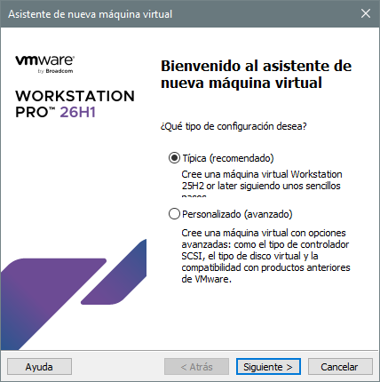
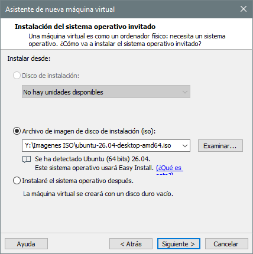
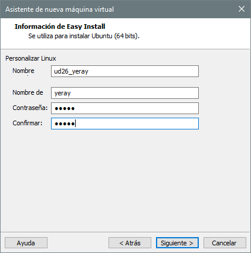
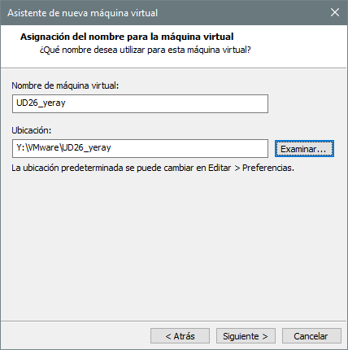
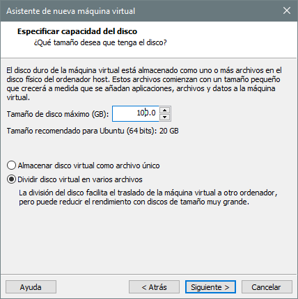
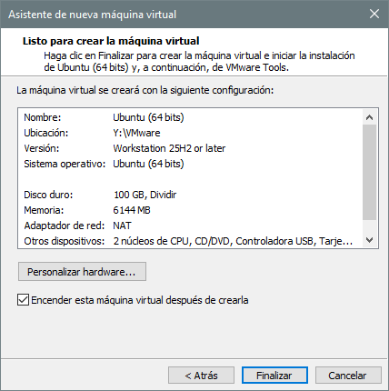
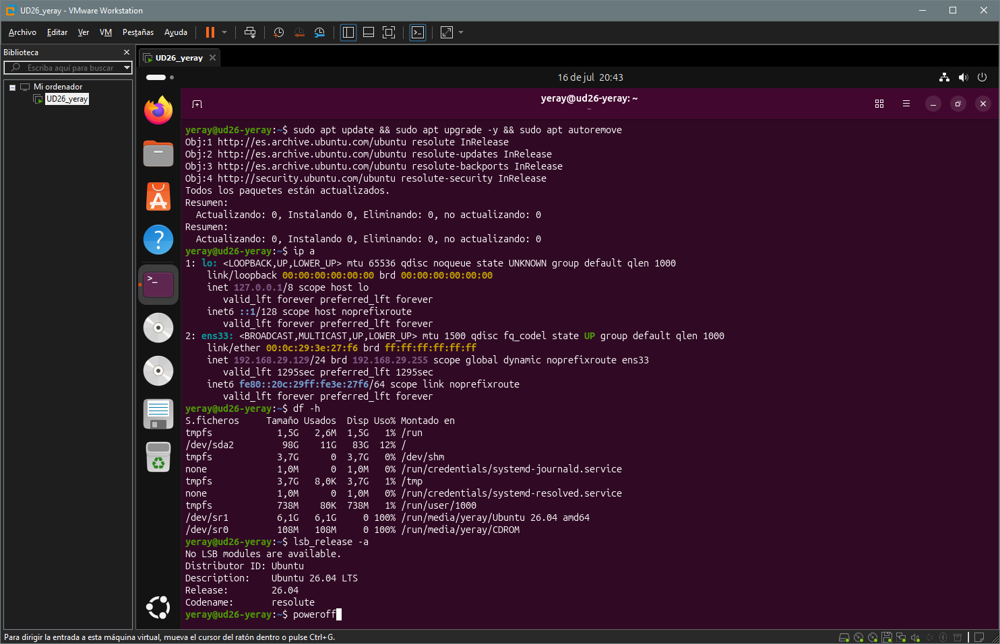

🖥️ VMware Workstation Pro
1. VMware
Software de virtualización que permite ejecutar uno o varios sistemas operativos (máquinas virtuales) dentro de tu sistema operativo principal, sin necesidad de particionar el disco ni reiniciar el equipo.
¿Para qué se usa en el aula?
- Practicar instalación y administración de sistemas operativos
- Probar configuraciones de red sin afectar al equipo real
- Realizar laboratorios de servidores (SSH, Apache, DNS, etc.)
- Aprender Linux sin riesgos
- Crear entornos de prueba aislados
Licencias
| Licencia | Precio | Uso | Snapshots | Red Virtual | Soporte | Descarga |
|---|---|---|---|---|---|---|
| Workstation Pro Personal ⭐ | Gratuito | Personal y educativo | ✅ | ✅ | ❌ | Descargar |
| Workstation Pro Comercial | Suscripción anual | Empresarial y profesional | ✅ | ✅ | ✅ | Descargar |
| Academic Program | Según convenio | Centros educativos | ✅ | ✅ | ✅ | — |
| Workstation Player | ~~Gratuito~~ | ~~Simplificado~~ | ❌ | ❌ | ❌ | ~~Descontinuado~~ |
Descarga
- Ve a Fusion and Workstation y haz clic en DOWNLOAD NOW
- Inicia sesión o crea una cuenta gratuita de Broadcom.
- Descargar el archivo
.exe. Para ello una vez iniciada sesión, en el menu seleccionamosMy Downloadsy despues enFree Software Downloads available HEREy buscamosVMware Workstation Pro, seleccionamos la última versión leemos y aceptamos los terminos y condiciones y descargamos el software.
 |
 |
 |
2. Instalación
Haz doble clic en el archivo descargado (ej. VMware-Workstation-Full-XX.X.X-XXXXXX.exe), sigue los pasos del asistente y elige las carpetas po defecto.
 |
 |
 |
Una vez finalice abre el programa.

Interfaz de VirtualBox
- Panel izquierdo: Lista de todas tus máquinas virtuales
- Barra de herramientas: Botones de encendido, pausa, snapshot, etc.
- Área central: Pantalla de la máquina virtual activa
- Barra de estado: Información de red, dispositivos USB, etc.
Atajos de teclado
- Ctrl + Alt → Liberar el ratón/teclado de la VM
- Ctrl + Alt + Enter → Pantalla completa
- Ctrl + Alt + P → Pausar la VM
- Ctrl + Z → Suspender la VM
- Ctrl + Shift + P → Tomar snapshot
3. Creación de una VM
Para este manual vamos a crear una máquina virtual de Ubuntu Desktop 26, los pasos son exactamente los mismos para otras versiones.
Paso 1 — Descargar la ISO de Ubuntu
Ve a https://ubuntu.com/download/desktop, descarga la imagen ISO de Ubuntu Desktop 26.04 LTS y guarda el archivo .iso en una carpeta donde guardes todas las ISOS (ej. Y:\ISOs\ubuntu-desktop.iso)
{kind=link}
Paso 2 — Crear máquina virtual
En VMware haz clic en Crear una máquina virtual nueva o ve a Archivo → Nueva máquina virtual y seguir el asistente de creación de máquina virtual, comenzando seleccionando la creación Típica (recomendado).
Paso 3 — Seleccionar la ISO
Haz clic en Examinar y navega hasta tu archivo .iso de Ubuntu, VMware detectará automáticamente el sistema operativo.
Paso 4 — Configurar usuario inicial (Easy Install) Recuerda estos datos, los necesitarás para iniciar sesión en Ubuntu.
 |
 |
 |
{kind=link}
{kind=link}
{kind=link}
Paso 5 — Nombre y ubicación de la VM Como nombre de máquina escribir el estándar de clase, y recomendable guardar la máquina en un disco externo donde haya una carpeta con el nombre de VMware y dentro otra carpeta con el nombre de la máquina, donde se crearán todos los archivos de configuración.
Paso 6 — Tamaño del disco virtual Al ser almacenamiento dinámico se recomienda 100GB
Paso 7 — Revisar y personalizar hardware Antes de finalizar, haz clic en "Personalizar Hardware..." para ajustar los recursos:
| Recurso | Valor recomendado para prácticas |
|---|---|
| Memory (RAM) | 4096 MB (4 GB) mínimo |
| Processors | 2 núcleos virtuales |
| Network Adapter | NAT (acceso a Internet por defecto) |
| CD/DVD | Verificar que apunta a la ISO correcta |
 |
 |
 |
{kind=link}
{kind=link}
{kind=link}
{kind=link}
Paso 8 — Instalación de Ubuntu Server La VM arrancará automáticamente desde la ISO. Sigue el asistente de instalación:
{kind=link}
{kind=link}
{kind=link}
{kind=link}
{kind=link}
{kind=link}
{kind=link}
{kind=link}
{kind=link}
{kind=link}
{kind=link}
{kind=link}
{kind=link}
{kind=link}
{kind=link}
{kind=link}
{kind=link}
Paso 9 — Primer arranque de Ubuntu La VM reiniciará y expulsará la ISO automáticamente y aparecerá el login.
{kind=link}
Paso 10 — Primeros comandos útiles
sudo apt update && sudo apt upgrade -y && sudo apt autoremove # Actualizar el sistema
ip addr show # Ver la IP de la máquina virtual
df -h # Comprobar espacio en disco
lsb_release -a # Ver la versión de Ubuntu instalada
sudo poweroff # Apagar de forma segura
{kind=link}

4. Operaciones básicas
{kind=link}
Instantáneas
Los snapshots son una de las funciones más útiles de VMware. Guardan el estado completo de la VM en un momento determinado.
| Crear un snapshot | Restaurar un snapshot |
|---|---|
VM → Snapshot → Tomar Instantánea... (Recomiendo tener VM apagada)Escribe un nombre descriptivo Clic en Tomar Instantánea |
VM → Snapshot → Administrador de instantánea Selecciona el snapshot deseado Clic en Tomar Instantánea... |
💡 Consejo: Toma siempre un snapshot justo después de instalar el sistema y antes de hacer cambios importantes. Si algo falla, puedes volver atrás en segundos.
Modos de red
VMware ofrece 3 modos de red principales, para cambiar: VM → Configuración → Adaptador de red → Conexión de red
| Modo | Descripción | Uso recomendado |
|---|---|---|
| NAT | La VM comparte la IP del host. Tiene acceso a Internet | Uso general y descargas |
| Bridged | La VM aparece como un equipo más en la red física | Laboratorios de red |
| Host-only | Solo comunica la VM con el equipo host, sin Internet | Entornos aislados |
Recursos
- Descarga VMware Workstation Pro
- Documentación oficial VMware
- Documentación Ubuntu
- Foros VMware (comunidad)
Manual elaborado para uso académico · VMware Workstation Pro (versión gratuita personal)